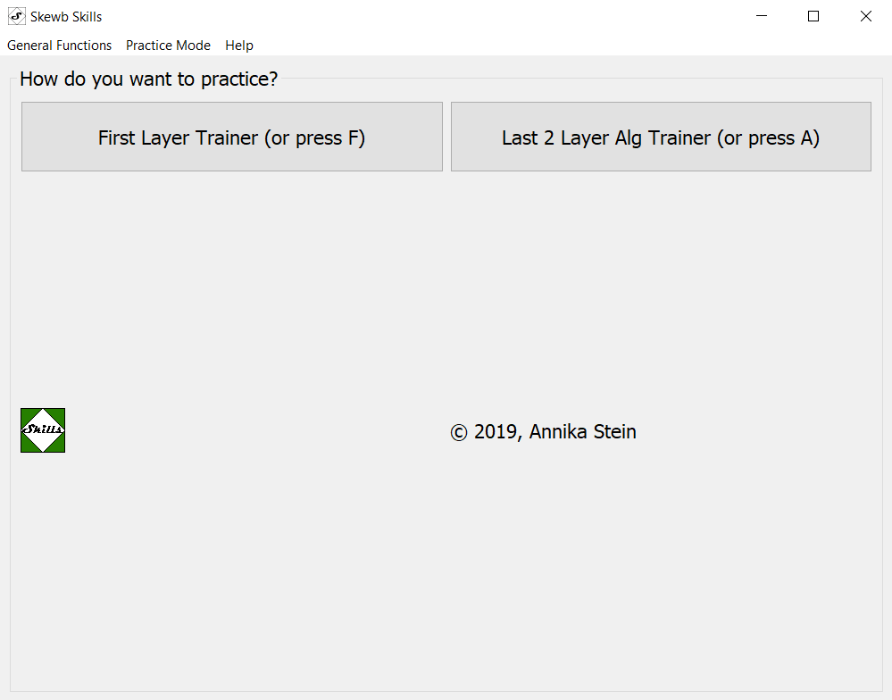
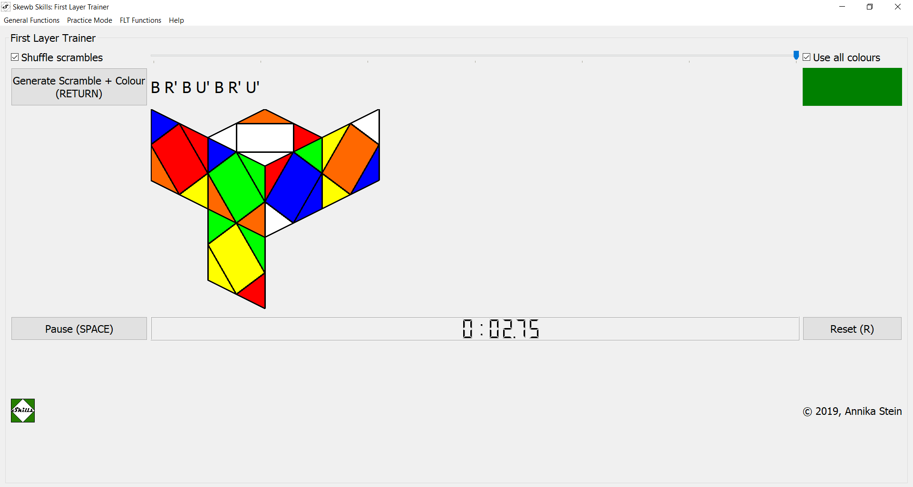
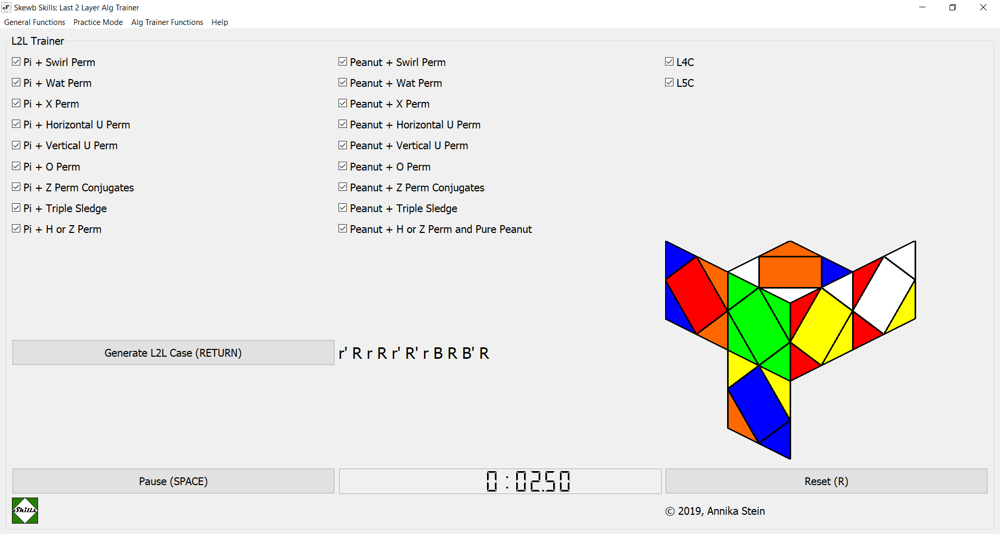
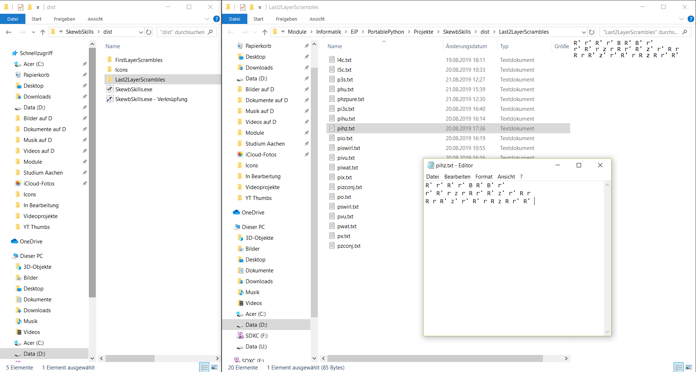

SkewbSkills - Infopage and Download
Practice and learn skewb algs, first layer and more!
This description intends to show you how to use SkewbSkills and give a quick overview on the development process.
SkewbSkills is now available as a webpage or can be downloaded as a .zip folder, containing an .exe. Read more about installation below.
SkewbSkills is free to use for all skewbers out there (!) and has been created by Annika Stein (also known as HugaCuba on social media such as YouTube or Instagram) to
- practice the first layer
- practice algs for the last two layers
- practice programming with python and qt
- practice html, css and javascript!
What's new?
One-Look-Trainer released for SkewbSkillsWeb
A brand new function of SkewbSkillsWeb now addresses all Skewbers that try to practice one-looking. You can vary the difficulty by defining how many moves will be neccesary to solve the first layer (at most). Therefore you can gradually increase your one-looking skills! Jump right into the new feature by opening SkewbSkillsWeb and tell me how you think about this new addition.Say hello to 2020 and release of SkewbSkills v2.0
Happy new year to all skewbers!
Finally you can use the major improvements also in SkewbSkills .exe, we've
got WCA scrambles, a button to hide or show the scramble image and some minor
design updates and bugfixes. Be sure to check out the new version by downloading
the corresponding .zip-archive here!
It's now time to consider this update as the first one that is different from
my old page annikastein.github.io/SkewbSkills, where I mention that soon, the page
you are looking at right now is going to replace the old one! Glad you are already here!
The old one will be kept, carrying all python versions and of course stay as a repository
for development of the .exe version.
All the old news that were already communicated on my old page:
As of 21.12.2019
You can now use a nice feature of SkewbSkillsWeb (and also SkewbSkills .exe in the future): WCA notation scrambles instead of Rubiksskewb notation for the Last 2 Layer Trainer!
I wrote a python module that transforms Rubiksskewb to WCA notation, given that the initial scramble consists of the moves like the ones in this document (credits: Elias Malomgré and Carter Cucala).
Although I already used it for both SkewbSkillsWeb (.js) and the .py version, its source code is also available here on my Github repository, as usual. You can of course also use it as a standalone notation converter, but right now it lacks a grafical user interface. So it is just for those of you familiar with either .js or .py files and such. But as I said before, you don't have to do this on your own to use SkewbSkills, it's already implemented for all the LL cases that were included already.
Actually, this was the most difficult part on my programming journey so far, not because programming is complicated, but because even solving this problem on paper was sort of impossible for me at the beginning of my thought process.
Now I'm wishing you all nice holidays and I'm looking forward to publishing a new .exe bundle soon for those of you that want to use SkewbSkills offline.
And as always: feel free to comment any bugs, ideas, feature requests, experiences...
As of 27.11.2019
... I added some buttons (for each case!) that make you select exactly the cases you want to practice. Also, the possibility to select groups of algs is still there, so using both approaches, you can at least increase the probability to receive certain cases up to a factor of 2.
Another minor improvement is a simple button that lets you show or hide the scramble image as has been requested some time ago in the FB group "Cyoubx's Friends" and / or "Skewbers". Thank you all for your ideas and critique, it helped a lot! Sorry that it took longer than expected, physics is time consuming. ;)
Some improvements on SkewbSkillsWeb
You can now use a stopwatch on SkewbSkillsWeb, on any mobile device or on a laptop / computer / whatever! The responsive design of the jekyll theme allows us to adjust the size and appearance of buttons and content, giving us a nice layout everywhere.
And if you improve your best time for each L2L case, a prompt is going to tell you that you got a PB!
You might not be able to change / adjust the scrambles atm, but the feature mentioned above is SkewbSkillsWeb-only and kind of a compensation. ;)
Hopefully, someday more statistics will be implemented to get detailed insight in your improvement.
Release of SkewbSkillsWeb
Yes, you've heard correctly, SkewbSkills is now available as a webpage! This very first web-based release might look a little ugly and lack a stopwatch, but it WORKS, apart from that! :)
Believe me or not, getting everything done in JavaScript was a bit of a mess as a complete .js newbie, but using my python scripts saved me a lot of time. Tbh, it took me not more than three days (the last time using anything like html / css must have been several years ago).
Seems like learning new languages is much easier than learning your first one. ;) (yOu DOn'T sAY?!)
Release of 1.2:
- Create subfolders that contain the scrambles and icons (thanks to Elias for the suggestion)
- Added 'General Functions' menu with shortcut to close the window
- Minor changes of the tooltips
Download v1.2 as a .zip-folder here.
Release of v1.1:
- Better way to generate the first layer trainer scrambles, less code, less disk space - faster in general.
- (GERMAN) Video on SkewbSkills is published here!
- Stopwatch for the FLT, higher accuracy of the stopwatch compared to the first version
- "Guide" for non-windows users added down below
- minimum width of the scramble drawing to prevent overlap with the third column
Download v1.1 as a .zip-folder here.
Release of v1.0:
You can now download and use version 1.1 of SkewbSkills! Browse through the source code on github or simply run the executable and have fun! More info on how to install your own copy of SkewbSkills down below.
Download v1.0 as a .zip-folder here.
What's planned?
- Add other practicing modes, or modify the current ones:
- I'd like the user to identify weak algs and put them on a special pile to work on particularly
- add quiz where you only see three faces and have to identify the case
- add competition sim where you get five scrambles, but only four times a day ;)
- add statistics for every L2L case that shows improvement
- function to identify which cases you know, where you can put in your own algs and keep track of the cases you know
- Make SkewbSkills available to more platforms than Windows (see paragraph below for more information)
Download and Installation (as webpage)
You don't need to worry about downloading or installing anything, you can access SkewbSkills now directly from the web, as a webbased application!
If you want to, grab yourself a browser that is able to store websites (save all data required, e.g. by pressing Ctrl + S) and use SkewbSkills offline, as well!
Download and Installation (as desktop application)
Windows
Download the zip-file, containing the .exe, some pictures and .txt files. Do not move the .txt-files out of the directory, they contain the scrambles. Actually, using my pictures is not necessary, but they are included for design purposes.
To open the program, extract the zip-folder and open "SkewbSkills.exe" (v1.1 and up) or "MainWindow.exe" (v1.0), either by using the executable itself, by defining a shortcut (which is pretty nice if you want to put the program on your desktop or the taskbar). What you can also do is run the MainWindow.py-code (for those of you that have a python interpreter set up). For the latter, you would have to download the sources in the repository and make sure all packages are installed. Therefore, this option is only recommended for more experienced users, because you might have to get PyQt5 etc. before you can run the application.
*Note*: since the .exe is really new and not many people use it, you might have to allow your computer to execute it. This also applies to antivirus software if you use some.
Other platforms
At the moment, apart from SkewbSkillsWeb (which runs basically in every browser supporting javascript), SkewbSkills is only available as an .exe-file. Therefore, if you want to use SkewbSkills on a different platform than windows, you might want to consider using a software called "Wine" (freeware, on macOS or Linux for example).
- GERMAN Tutorial for macOS
- ENGLISH Tutorial for macOS
- GERMAN Tutorial for Linux
- ENGLISH Tutorial for Linux
Besides that, there is always the option to download the sources and run "MainWindow.py" on your machine using Python 3.
If I'm informed correctly, it should already be possible for linux users to run python files, but the package 'PyQt5' has to be installed.
Update your version
Updating your version of SkewbSkills is pretty easy. Just download the newest .zip-folder and remove the previous one. It's also possible to use more than one version on the same device, if you do not mix the files into one folder or randomly copy/paste from one to another version.
If you have modified your scrambles and want to use them in your updated version of SkewbSkills, download the newest version and only change each scramble file you have overwritten with your own algs. In newer versions, the files might be located in other folders, but they will be named the same way as before.
Usage
Keep in mind that this guide was written using one particular version of SkewbSkills, the current layout of buttons etc. could be a little different.
Taking the example of the offline / Python / .exe - version
After opening SkewbSkills, type "H" or choose Help from the menubar to get (almost) the same instructions as below. You can close every window inside SkewbSkills by pressing ESCAPE.
Starting Window
Choose any from the different practicing modes, by pressing the corresponding button or key, respectively. A new window appears, the starting window closes. *Note*: the First Layer Trainer might take some time to open, so be a little patient (especially for v1.0 users).
First Layer Trainer
There's a slider to define the length of the scrambles, you can choose between 1 and 7 moves. This can also be done with the keys 1 to 7 on your keyboard, if you're using v1.1 and up. If you want the scrambles to be shuffled, use the checkbox "Shuffle scrambles" (shortcut: S). The checkbox "Use all colours" (with its shortcut C) allows SkewbSkills to show you various colours so that you can practice to start the first layer with every color (to become CN). When you're ready with the customization, press "Generate Scramble + Colour" (or RETURN). A new scramble appears, both as a label containing the scramble sequence, and with a drawing.
If you want to time yourself solving the first layer, use the stopwatch with its two buttons, Start (SPACE) / Pause (SPACE) and Reset (R). *Small warning, especially for v1.0*: the more moves you select, the larger the files are that contain the scrambles. Therefore, it might take a little until the process is completed. In further versions such as v1.1 and up, this should not be the case anymore.
L2L Alg Trainer
Select all the alg sets that you'd like to practice. This can be done manually by checking or unchecking them via mouseclicks, or by pressing "T" ((un-)select all sets), "L" ((un-)select L4C, L5C), "I" ((un-)select all Pi cases) and "U" ((un-)select all Peanut cases).
SkewbSkills is going to shuffle (randomize) the order in which they appear. Use the "Generate L2L Scramble" Button or press RETURN to generate a scramble. A drawing of the scramble appears. All scrambles are performed with the White/Red/Green Corner on top/front. Start the timer with the "Start" Button or press SPACE. After starting the timer, you can stop it again by clicking the same button ("Pause") or pressing SPACE again. You can than reset the timer to zero by using the "Reset" button (or press "R").
Your own algs
You do not need to change anything on any file anymore once you've extracted the folder. But: if you find that you'd like other scrambles to be displayed than the current ones, open any of the .txt-docs and modify the scrambles to your liking. If you want to keep track of which scrambles generate which case, see this document (credits: Elias Malomgré and Carter Cucala). I use the same terms for the cases to indicate them, as well as the same order.
Keep in mind that you need to write scrambles, not solutions for the different cases. You need to inverse your preferred solution to get the scramble you want. I chose the not so common solutions as scrambles, because than you can't see your solution by staring at the scramble and simply reading it backwards. That way you are forced to come up with a solution yourself. ;)
When modifying the scrambles in the .txt-Files, note that the very last character of the file must be one space in the line of the last scramble. So do not make any additional line break after the last scramble, but end the line of the last scramble with a space.
In almost the same manner, do not use a space or anything else to end the previous scrambles. All lines that are not the last line should only contain the scramble itself, ending with the last move. If you do not apply the steps above, your program might crash (because it can only read and use the scrambles provided in the form mentioned earlier).
Credits
As I am just starting out Python (and PyQt5), I had a lot of input from various online sources.
I learned a lot from this playlist by Parwiz Forogh and also used this project by enkore to get the stopwatch running. Also thanks to Mattheo de Wit, who created a similar (but web-based) application! This was a big influence on how the L2L-Trainer should work.
When reading the LICENSE doc, you might find out that you are not only free to use the program, but also the source code. This is to ensure everyone can learn something, of course I appreciate every suggestion for improvement, as I might actually be the one to learn something through this project! :)